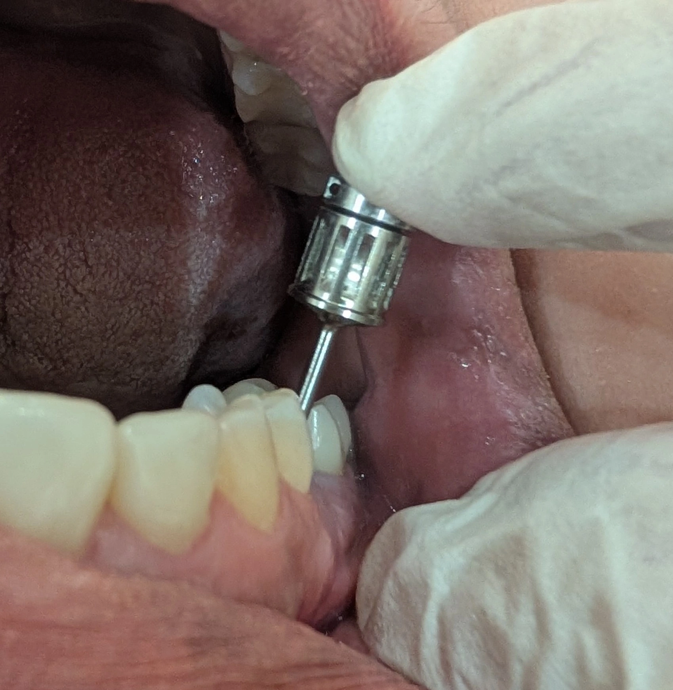

Insight 47 — نکاتِ مهم در مواجهه با ایمپلنت با زاویهی نامناسب
تاریخ انتشار:
آخرین بازبینی:
English

توضیح بالینی
روکشِ ایمپلنتِ خلفی روی فیکسچری که زاویهاش به سمتِ باکولینگوال نامناسب است؛ چرا زاویه فقط یک مسئلهی اباتمنت نیست، چرا اینجا باید سراغِ روکشِ برگشتپذیر برویم نه سمانِ دائم، و چرا در اکلوژنِ گروپفانکشن روکش را بهنرمی از تماسهای طرفی خارج میکنیم بدونِ اینکه فرمِ کاسپِ باکال بههم بریزد
- وقتی زاویهی ایمپلنت نامناسب است، تصورِ رایج این است که قضیه ساده است: یک اباتمنتِ مناسب (مثلاً اباتمنتِ زاویهدار) میگذاری، مسیر را اصلاح میکنی، و تمام. انگار زاویهی ایمپلنت فقط یک مسئلهی مسیر است و هیچ عارضهای پشتش نیست. این تصور اشتباه است. زاویهی فیکسچر خودش را در عوارضِ بعدی نشان میدهد، و دقیقاً به همین خاطر است که باید سرِ انتخابِ روکش و طرحِ اکلوزال دقت کنی.
- و نکته اینجاست که هر زاویهای هم مثلِ هم نیست. آنچه پیچِ اباتمنت را تهدید میکند صرفِ زاویهدار بودن نیست، جهتِ آن زاویه است؛ و از همه بدتر، زاویهی باکولینگوال است.
- این ایمپلنت زاویهاش به سمتِ باکولینگوال نامناسب بود، و همین جهت، همهچیز را تعیین میکند. طبق مطالعات، زاویهی باکولینگوال برای شلشدنِ پیچ از همه بدتر است. علتش احتمالاً این است: اگر زاویه مزیودیستال باشد، بردارهای نیروی طرفی را کانتکتهای پروگزیمالِ دندانهای مجاور تا حدِ زیادی مهار و اصلاح میکنند؛ اما در جهتِ باکولینگوال چنین کانتکتی نیست که نیرو را بگیرد، پس بار بهصورتِ غیرمحوری مستقیم مینشیند روی مجموعهی اباتمنت و پیچ، و همان است که پیچ را شل میکند. پس وقتی زاویه در این جهت باشد، عملاً درگیرِ شلشدنِ پیچ هستیم. تصمیمِ اول روشن است: روکش باید برگشتپذیر (retrievable) باشد، که اگر پیچ شل شد بشود بدونِ خرابکردنِ روکش رفت سراغش و دوباره بست.
- نکتهی ظریف اینجاست: همان زاویهی باکولینگوال که ریسکِ شلشدن را بالا میبرد، محلِ دسترسیِ پیچ را هم میاندازد روی باکال. اسکروسمنت دقیقاً برای همین برگشتپذیری ساخته شده (روکش را روی اباتمنتِ سفارشی سمان میکنی و آخرش پیچ میکنی)، اما شرطش این است که سوراخِ دسترسیِ پیچ از اکلوزال در بیاید. وقتی این دسترسی میافتد روی باکال، عملاً اسکروسمنتِ معمول از دستت میرود. اگر بشود با کانالِ پیچِ زاویهدار (angulated screw channel) دسترسی را برگرداند به اکلوزال، همین کار را بکن؛ بهترین حالت همین است، چون هم برگشتپذیری سرِ جایش میماند و هم دسترسی جای درستش مینشیند. اگر این هم نشد، بهتر است سراغِ سمانِ دائم نرویم؛ سمانِ دائم روی ایمپلنتی که پیچش هر آن ممکن است شل شود مشکل را حل نمیکند، فقط قایمش میکند.
- نکتهی دوم به اکلوژنِ بیمار برمیگردد که گروپفانکشن بود. در گروپفانکشن، موقعِ حرکاتِ طرفی چند دندانِ خلفیِ سمتِ کارگر با هم گاید را برمیدارند، یعنی نیروی افقی به این روکش هم میرسد. حالا حتی اگر مقالات این بردار را روی این دندانِ خاص قطعی تأیید نکنند، روی ایمپلنتی که از قبل بهخاطرِ زاویه بارِ غیرمحوری دارد، ترجیحِ من این است که همین نیرو را کم کنم. برای همین در حرکاتِ طرفی روکش را خیلی نامحسوس از تماس خارج کردم، طوری که ظاهر و مخصوصاً فرمِ کاسپِ باکال هیچ بههم نریزد. منطقش همان implant-protected occlusion است: تا جای ممکن گاید و بارِ افقی را از روی ایمپلنت بردار، بدونِ اینکه فرمِ دیداریاش را خراب کنی.
-
نکته کلیدی:
زاویهی نامناسبِ فیکسچر را فقط یک مشکلِ اباتمنت نبین؛ همان زاویه بعداً خودش را در عوارض نشان میدهد. مهمتر اینکه چیزی که پیچ را تهدید میکند جهتِ زاویه است نه خودِ زاویهدار بودن، و طبق مطالعات زاویهی باکولینگوال بدترینش است؛ احتمالاً چون برخلافِ جهتِ مزیودیستال، کانتکتِ دندانهای مجاور نیروی طرفی را در این جهت مهار نمیکند و بار مستقیم روی پیچ میافتد. پس روی فیکسچرِ زاویهدار به سمتِ باکولینگوال، روکش را برگشتپذیر بساز؛ اگر همین زاویه دسترسیِ پیچ را انداخت روی باکال، اول با کانالِ پیچِ زاویهدار سعی کن برش گردانی به اکلوزال، و اگر نشد سراغِ سمانِ دائم نرو. همزمان در گروپفانکشن بارِ افقی را با خارجکردنِ نرمِ روکش از تماسهای طرفی کم کن، طوری که فرمِ کاسپِ باکال و ظاهرِ دندان سرِ جایش بماند. خلاصه روی فیکسچرِ زاویهدار هم جلوی شلشدنِ پیچ را بگیر، هم جلوی اضافهبارِ افقی را، بیاینکه زیبایی را از دست بدهی.
محتوای این صفحه برای استفادهٔ آموزشی دندانپزشکان و دانشجویان دندانپزشکی تهیه شده است.